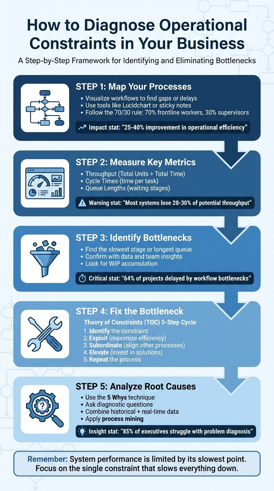
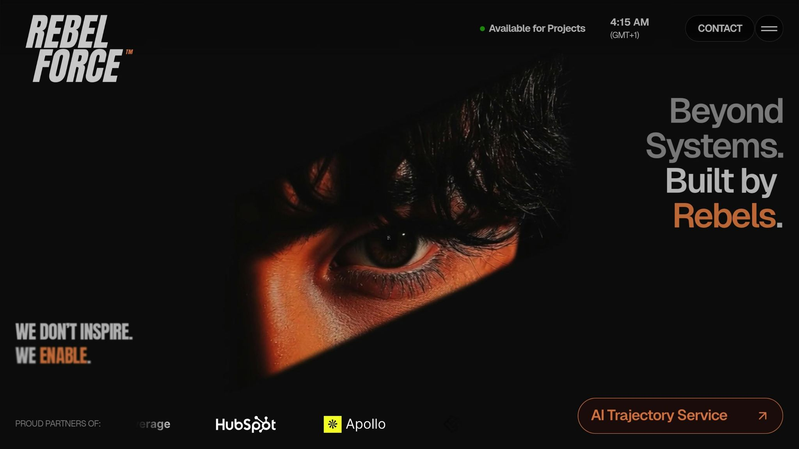

Operational Excellence
How to Diagnose Operational Constraints in Your Business
To improve your business, focus on identifying the single constraint that slows everything down. Think of it like a traffic bottleneck - fixing it can increase efficiency and revenue. Here's a quick breakdown of how to do it:
Map Your Processes: Visualize workflows to find gaps or delays. Use tools like Lucidchart or simple sticky notes for clarity.
Measure Metrics: Track throughput (output over time), cycle times (time per task), and queue lengths (waiting stages) to spot bottlenecks.
Identify Bottlenecks: Look for the slowest stage or longest queue in your process. Confirm with data and team insights.
Fix the Bottleneck: Optimize its efficiency, adjust other processes to support it, and invest in solutions if needed.
Analyze Root Causes: Use data and questions like "Why is this step slow?" to address underlying issues.
This step-by-step approach aligns resources with the most pressing challenges, ensuring your business runs smoothly and efficiently.

5-Step Process to Diagnose and Fix Business Operational Bottlenecks
How Do You Identify Workflow Bottlenecks?
Step 1: Map Your Business Processes
Many business processes only exist in the minds of individuals, leading to a fragmented understanding of workflows. Process mapping turns these fragmented ideas into actionable documentation, helping uncover gaps between what people think happens and what actually occurs.
For small and midsize businesses, mapping workflows can improve operational efficiency by 25–40% and increase annual revenue by as much as $200,000.
Take the example of an outdoor gear retailer in Austin, Texas, with $2 million in annual revenue. In September 2025, they mapped their manual payment verification process and found a bottleneck that took up 4 hours per order. By switching to auto-verification, they cut processing time by 85% and added $180,000 in annual revenue.
Use Visual Process Mapping Tools
Visual tools make it easier to spot issues like delays, overloaded resources, or work queues that keep piling up. Swimlane diagrams are especially helpful because they show where responsibilities overlap or where tasks stall during handoffs between departments.
Start with something simple like sticky notes, which allow for easy adjustments. Once you have a draft, move to digital tools such as Draw.io, Microsoft Visio Online (around $5/month per user), or Lucidchart Professional (about $12/month). Stick to standard symbols: rectangles for tasks, diamonds for decisions, and ovals for start or end points. This consistency ensures everyone interprets the map correctly.
"You can't fix what you can't see. Process mapping makes the invisible visible in your business operations." - Mi Negocio TOP
When forming your mapping team, follow the 70/30 rule: include 70% frontline workers who handle the tasks daily and 30% supervisors for oversight. This approach ensures your map reflects reality rather than assumptions. For instance, a professional services firm in Denver learned this lesson in 2025 when they mapped their client onboarding process. By involving account managers, they uncovered that the process required 25 emails and 18 forms - far more than leadership expected. By streamlining it to 7 documents and 5 structured communications, they cut onboarding time from 18 days to 5 days (a 75% improvement) and boosted client satisfaction scores from 7.4 to 9.2 out of 10.
Once your visual map is complete, clearly define the starting point and the end result for each process.
Identify Key Inputs and Outputs
Using your visual map as a guide, pinpoint what kicks off each process and what defines its successful completion. Start by identifying the Trigger Event - the action that begins the process - and the Completion Criteria - the measurable result that signals success. For example, in an order fulfillment process, the trigger might be "customer payment confirmed", while the completion criteria could be "tracking number sent to customer."
A helpful trick is to map backward: begin with the desired outcome and trace the steps back to the starting point. This approach ensures you don’t miss any critical steps or dependencies. Don’t forget to document exceptions - include scenarios where the process might fail alongside the ideal workflow.
For every step, note the resources needed to begin (inputs) and the specific outcomes generated (outputs). This level of clarity eliminates redundant work - which cost the average knowledge worker 129 hours in 2021 - and ensures that every task contributes value to the customer.
Step 2: Measure Key Metrics
After mapping your processes, the next move is to measure actual performance. Without solid data, identifying problems becomes little more than educated guessing. To get a clear picture, focus on three key metrics: throughput, cycle times, and queue lengths.
Throughput tells you how many units your process completes in a specific time frame. It’s calculated by dividing Total Units Produced by Total Time. Cycle time, on the other hand, measures the time it takes to finish one unit and start the next. Interestingly, most production systems lose 20–30% of their potential throughput due to hidden constraints. This means businesses could be unknowingly leaving a lot of revenue on the table. Together, these metrics are essential for identifying bottlenecks.
Understand Throughput and Cycle Times
To find bottlenecks, calculate the cycle time for each stage of your process. The stage with the longest cycle time is usually the bottleneck. For confirmation, use the Bottleneck Index by dividing the slowest cycle time by the average cycle time. If the index is significantly above 1.0, you’ve found the constraint.
Between 2023 and 2025, Avalign Technologies used the MachineMetrics production intelligence platform to monitor machine downtime and cycle times in real time. This approach led to a 25–30% improvement in Overall Equipment Effectiveness (OEE) and unlocked millions in additional capacity.
"System performance is limited by its slowest point. Speeding up non-critical steps won't change the outcome if the constraint isn't addressed." - Tulip
Another useful indicator is the percentage of time each machine or workstation is active versus idle. If one machine is active far more often than others, it’s likely the bottleneck. Interestingly, companies with an operational efficiency ratio of 50% or less are often considered to be performing well. If your ratio is higher, it’s worth taking a closer look at your cycle times to figure out where capacity may be wasted.
To complete the picture, combine throughput and cycle time data with an analysis of queue lengths to identify delays.
Track Queue Lengths to Spot Delays
Queue lengths can reveal where work is piling up. Large accumulations of work-in-progress (WIP) often occur just before the bottleneck. If you notice materials or tasks waiting at a specific stage, that’s a strong signal of where the constraint lies.
Use event logs from your ERP or MES systems to track how long items spend waiting between stages. Look for the "neck" - the machine or process with the longest queue is likely the root cause of workflow delays. Don’t just rely on data, though. Operators on the floor often spot physical queues before they’re reflected in digital reports, so their input is invaluable.
"A manufacturing bottleneck is a work stage that cannot meet the production quota even at its maximum throughput capacity, thereby delaying or stopping the flow of operations." - Patrick Lemay, Tulip
Research shows that 64% of organizational projects are delayed by workflow bottlenecks. By using IoT sensors and digital dashboards to monitor queue lengths in real time, you can catch bottlenecks as they emerge, rather than dealing with the fallout after they’ve disrupted your delivery schedule.
Step 3: Identify and Address Bottlenecks
Once you've mapped out and measured your process, it's time to tackle the bottleneck. This step is crucial because improving the bottleneck is the only way to increase throughput. The rest of the process? It won’t matter much unless the bottleneck gets better. This idea is rooted in the Theory of Constraints (TOC), developed by Eliyahu M. Goldratt.
"The throughput of any system is determined by one constraint (bottleneck)." - Eliyahu M. Goldratt
Goldratt's TOC outlines a five-step cycle for continuous improvement, focusing on the most critical constraint. It starts with identifying the bottleneck, then maximising its efficiency, aligning other processes to support it, eliminating it entirely, and finally, repeating the cycle. With your metrics in hand, it's time to dive into these steps and address the bottleneck that's holding you back.
Step 1: Identify the Constraint
Start by pinpointing the exact stage in your process that's slowing everything down. A "Gemba" walk - where you observe the process in action - can help you spot areas with heavy work-in-process (WIP) or where certain resources are overburdened while others sit idle [2,33]. Use cycle time data to confirm your findings. Keep in mind, there’s only one true constraint in a system at any given time. Other weak points will only become constraints once the current one is resolved.
Step 2: Exploit the Constraint
The goal here is to squeeze the most output possible from the bottleneck without pouring in extra resources [2,6]. Ensure the bottleneck is always running - this might mean scheduling work during breaks or shift changes and cross-training employees so there's always someone skilled available [2,34]. Inspect items before they hit the bottleneck to avoid wasting time on defects, offload tasks to other areas when possible, and schedule maintenance during downtime.
Step 3: Subordinate Other Processes
After maximising the bottleneck, adjust the rest of your processes to support its output. Overproducing in non-bottleneck areas can create unnecessary inventory and longer lead times [2,8]. Use the Drum-Buffer-Rope method: let the bottleneck dictate the pace, create a buffer to ensure it always has work, and only release new work when the bottleneck is ready [2,6]. Allow non-bottleneck areas extra capacity - sometimes called "Sprint Capacity" - to handle minor disruptions and prioritise maintenance for the bottleneck to keep it running smoothly.
Step 4: Elevate the Constraint
If the bottleneck persists after you've optimised and aligned processes, it’s time to invest in eliminating it [2,33]. This could mean buying new equipment, hiring more staff, authorising overtime, or introducing automation tools like Robotic Process Automation (RPA) [2,4,35]. You could also reduce setup times (using SMED techniques) or temporarily reassign workers - a strategy known as "swarming" - to clear backlogs. TOC prioritises increasing throughput over cutting costs.
Step 5: Repeat the Process
Resolving one bottleneck often brings the next one into view. To keep improving, restart the cycle immediately. Continuous improvement is an ongoing effort, and addressing each constraint as it arises is key to maintaining momentum [2,6].
Step 4: Analyze Root Causes with Data
Once you've pinpointed your bottleneck, the next step is figuring out what's causing it. Without addressing the root cause, you're just dealing with symptoms, not solving the actual problem. This is where root cause analysis comes into play - using thoughtful questions and data to dig deep into the underlying issues.
Interestingly, 85% of executives admit their organisations struggle with diagnosing problems, and 87% say these struggles lead to costly consequences. The ability to ask the right questions and interpret data effectively often separates successful businesses from those that fall behind.
Ask the Right Diagnostic Questions
To start, focus on questions that uncover the true issues in your process. Here are a few examples to guide your investigation:
Which machine or stage in the workflow has the longest queue or wait time?
Are queues growing faster than they can be cleared?
Is the input consistently exceeding what a specific unit can handle at full capacity?
Do employees have the skills needed to implement the required changes?
Is there inconsistency in training across different operators or shifts?
Are team members motivated and willing to work together toward a solution?
Could the bottleneck stem from broader issues, such as outdated policies or inadequate tools, rather than individual performance?
As Eli Goldratt, the creator of the Theory of Constraints, wisely said:
"An expert is not someone who gives you an answer, an expert is someone who asks you the right question."
Rod Morgan, Head of Faculty at RPM-Academy, also suggests a straightforward yet effective approach:
"Go back to each process and talk to the people that are in the room and ask them, 'What goes wrong at this stage of the process? What are some of the failure modes?'"
Once you've gathered insights from these questions, verify them with both historical data and real-time information.
Use Historical and Real-Time Data
Data is your ally when it comes to validating and quantifying the problems you've identified. Historical data can reveal patterns, trends, and recurring issues over time. For instance, if productivity consistently drops by 15% on certain days, historical data will highlight this trend, giving you a solid basis to predict future performance.
Real-time data, on the other hand, allows you to catch issues as they happen. Tools like IoT sensors and MES dashboards track metrics such as cycle times, machine uptime, and throughput in real time. This immediate visibility can help you spot and address emerging bottlenecks quickly. In fact, real-time monitoring has been shown to boost Overall Equipment Effectiveness (OEE) by 25% to 30%.
Another powerful tool is process mining, which uses event logs from systems like ERP, CRM, or SAP to map out your workflow. By analysing just three data points - Case ID (e.g., order number), Event Type (e.g., "invoice created"), and Timestamp - you can uncover hidden delays and inefficiencies that might go unnoticed through manual observation. As Siem Jaspers, a Supply Chain Analyst at Terumo Europe, puts it:
"You build an x-ray of your processes."
Finally, the 5 Whys method is a simple yet effective way to trace a problem back to its source. For example, if your cycle time is too long, ask "Why?" at each stage until you uncover the root cause. Combining this method with both historical and real-time data gives you a complete picture - not just of what's broken, but why it's broken. And understanding the "why" is the key to making lasting improvements.
Apply Rebel Force's 4-Phase Enablement Process

Once bottlenecks are identified and analyzed, the next step is to put Rebel Force's structured approach into action. Their 4-Phase Enablement Process is designed to leverage data-driven insights to eliminate bottlenecks and improve operations.
This framework can be tailored to your needs, whether you're aiming for quick wins with a 12-week Enablement Sprint or prefer a more gradual transformation over a 12-month Enablement Program. By building on the diagnostic work you've already done, these four phases turn insights into tangible operational improvements.
Phase 1: Diagnose with Data-Driven Systems
During this phase, manual guesswork is replaced with automated, time-stamped data analysis. Tools like AI and process mining dig into ERP, CRM, or SAP event logs to uncover bottlenecks, identify workflow delays, and analyse resource usage patterns . This automated approach pinpoints inefficiencies that traditional methods often miss.
For example, in February 2022, a U.S. industrial manufacturer used 300 hours of activity data to reveal that one-third of their work was non-value-added. This insight led to a 42% reduction in process time per employee.
Another key component of this phase is the AI Readiness Assessment, which evaluates your organisation across six pillars: Strategy, Governance, Data, Infrastructure, Talent, and Culture. This ensures that your business is not only identifying constraints but also prepared to implement AI-powered solutions effectively.
Phase 2: Design Enablement Blueprints
Once the diagnosis is complete, the next step is to turn insights into actionable plans. This involves creating strategic blueprints that align resources with the most pressing bottlenecks. The concept of subordination - ensuring all processes work in harmony - helps avoid waste and excess inventory .
Using BPMN (Business Process Model and Notation), these blueprints define ideal workflows and establish clear KPIs to guide the transformation process. Simulation models also allow you to test strategies in a virtual setting, letting you experiment with factors like labour availability or material constraints without any real-world risk.
This phase prioritises optimising existing resources before considering costly investments. For instance, assigning your most skilled workers to the bottleneck can lead to immediate gains without needing new equipment. The result? Faster cycle times and greater efficiency.
Phase 3: Execute Solutions with Dedicated Teams
This is where planning meets execution. Rebel Force deploys dedicated enablement teams to scale solutions like RPA (Robotic Process Automation) and intelligent automation . These teams collaborate with your internal staff to ensure smooth adoption and address any challenges that arise.
A great example comes from a copper mine in 2023. They implemented an AI-powered end-to-end model supported by a continuous improvement team. By adjusting process parameters - such as water pressure and grinder settings - in real-time based on ore quality data, they achieved a 3% to 7% increase in total output.
Execution also involves active monitoring. By tracking usage, accuracy, and adoption rates, your organisation can shift from reactive problem-solving to proactive, AI-driven issue resolution .
Phase 4: Validate Results with Measurable ROI
The final phase ensures that the changes deliver the desired outcomes. Rebel Force uses real-time analytics and process mining to monitor metrics like cycle time reductions, cost savings, and accuracy improvements .
Validation involves a multi-dimensional scorecard that evaluates factors such as scalability, employee experience, and financial impact. This comprehensive approach has been shown to deliver a 5% to 15% boost in EBITA and a 15% to 30% reduction in operational overhead.
To keep progress visible, weekly dashboards track adoption rates, Net Promoter Scores (NPS), and task completion through automated reports. As Ashmita Shrivastava, Content Marketing Manager at Moveworks, points out:
"92% of early AI adopters are already seeing an ROI, with many generating $1.41 in value for every dollar spent."
Additionally, the validation phase measures "Straight-Through Processing" (STP) lift - the percentage of workflows completed without manual intervention. By comparing total savings to the initial investment, you can clearly demonstrate the value of ongoing optimisation efforts .
Select AI-Driven Tools for Bottleneck Analysis
Once you've identified constraints in your operations, the next step is choosing the right AI-driven tools to bridge the gap between understanding the problem and resolving it. These tools can connect to systems like ERP, MES, or CRM, pulling real-time data to uncover inefficiencies. It's important to select tools that align with your diagnostic needs and integrate smoothly with your existing infrastructure.
One of the key benefits of these tools is their ability to continuously monitor key performance indicators (KPIs). This ongoing oversight lays the groundwork for identifying constraints and diagnosing their root causes. Advanced tools go beyond detection - they offer automated root cause analysis, predictive analytics for forecasting future constraints, and even discrete event simulation to test potential solutions without disrupting operations. Tools with automated constraint prioritization are particularly useful, as they rank issues based on their impact on overall throughput, ensuring your team focuses on the most critical problems. By turning metrics and observations into actionable insights, these tools help address bottlenecks effectively.
As Patrick Lemay from Tulip aptly puts it:
"Bottleneck analysis isn't a project you finish. It's part of how you run the operation every day."
The impact of automated bottleneck analysis is significant: it can improve efficiency by 5%–20%, achieve first-time fix rates exceeding 90%, reduce product waste by 37%, and boost throughput by 7%.
Compare AI-Driven Tools
Different types of AI tools play unique roles in diagnosing operational constraints. Here's a breakdown of their functions:
Process discovery software: Helps map and visualize workflows, making it ideal for early stages when identifying key inputs and outputs.
Process mining software: Analyzes event logs from current systems to uncover inefficiencies, such as hidden delays or rework loops.
Task mining software: Focuses on how users interact with systems, capturing the human element of operational constraints.
Tool Type | Purpose in Diagnosis | Integration Point |
|---|---|---|
Process Discovery Software | Map and diagnose workflows | Step 1 and Step 2 |
Process Mining Software | Analyze event logs for inefficiencies | Step 2 and Step 3 |
Task Mining Software | Examine user interactions | Step 4 |
When selecting tools, look for those that differentiate between labor-intensive tasks (long work durations) and process backlogs (long idle durations), as each requires a tailored solution. Tools with features like stacked visualizations or heatmaps can also highlight inconsistencies in task durations across team members, indicating areas where processes may need standardization.
Conclusion
Diagnosing operational constraints is not a one-time task - it’s an ongoing effort that fuels continuous improvement. The steps we've discussed - mapping processes, measuring critical metrics, identifying bottlenecks, and using data to uncover root causes - lay the groundwork for consistent and systematic progress.
"Improvement comes from continuous change." - Winston Churchill
The importance of this approach is backed by recent findings: while many leaders recognise the value of process optimisation, they often struggle to diagnose issues accurately. This leads to inefficiencies that grow more costly over time. By embracing structured methodologies like Plan-Do-Check-Act (PDCA) or the Theory of Constraints, organisations can move away from reactive problem-solving and toward proactive, systematic improvement.
Rebel Force's 4-Phase Enablement Process offers a clear path from diagnosis to transformation. Through its four structured phases - data-driven diagnosis, strategic planning, focused execution, and measurable ROI validation - businesses can achieve scalable and lasting improvements. Whether you opt for an intensive 12-week sprint or a more gradual 12-month program, this approach ensures consistent progress toward operational excellence.
It’s crucial to remember that constraints evolve as your business grows. Solving one bottleneck often reveals another, making regular reassessment essential to staying agile and competitive. The goal isn’t to achieve perfection but to build the ability to quickly identify and address challenges before they impact performance. By maintaining this proactive mindset, your business can uncover hidden opportunities and turn obstacles into advantages, ensuring lasting operational success.
FAQs
How can process mapping help my business run more efficiently?
Process mapping provides a clear, visual representation of your workflows, illustrating how tasks, decisions, and hand-offs progress from start to finish. This clarity makes it easier to spot inefficiencies, such as duplicated efforts, unnecessary approvals, or delays that might otherwise slip under the radar. By creating standardized workflows, it helps reduce errors, improves communication, and ensures a more consistent process.
When bottlenecks are identified on the map, you can target solutions like reordering steps, redistributing resources, or automating repetitive tasks. Incorporating data - like cycle times, costs, or error rates - into the map offers a way to measure performance and back up the need for changes. The outcome? Smoother workflows, lower operating costs (in USD), and faster delivery times - practical advantages for businesses in the U.S. Virgin Islands.
What are the key metrics to identify bottlenecks in your business operations?
To uncover bottlenecks in your operations, start by keeping an eye on a few key metrics. These include cycle time (how long it takes to finish one task or unit), throughput (the number of tasks or units completed within a set period), and queue length (the number of tasks waiting at each stage of the process). It's also helpful to track work-in-progress (WIP) levels, machine utilization (time spent active versus idle), and labor utilization (productive versus idle time) to spot areas where efficiency might be slipping.
For service-based businesses, metrics like lead time, on-time completion rates, and service-level accuracy are especially important. Comparing actual performance to capacity data (the maximum output possible) and production output (total units completed) can further reveal where constraints are slowing things down. Presenting these insights in clear, localized formats - like $12,500.00, 01/20/2026, or 1,250 units - makes the data actionable and easy to interpret within the U.S. Virgin Islands context.
How can the Theory of Constraints help identify and fix bottlenecks in my business?
The Theory of Constraints (TOC) offers a hands-on way to tackle bottlenecks that slow down business operations. At its core, TOC zeroes in on the most critical constraint in your workflow - the spot where progress stalls - and works to resolve it, unlocking smoother and more efficient processes.
TOC follows five essential steps: identify the constraint, maximize its output (exploit it), align other processes to support it (subordinate), increase its capacity (elevate), and repeat the process as new constraints emerge. By targeting the weakest link, this method ensures that your time and resources are concentrated where they’ll make the biggest difference.
For businesses in the U.S. Virgin Islands - or anywhere, really - TOC can be a game-changer. Whether you’re aiming to streamline your supply chain, cut down on delays, or boost profitability, this approach provides a straightforward path to solving operational challenges and achieving lasting improvements.